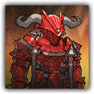

血骑士狄开俄波利斯 Dikaiopolis, the Blood Knight
近战 远程 物理 法术；领袖 类人（丰蹄）

|
 |
血骑士，狄开俄波利斯。米诺斯出身的感染者骑士，卡西米尔感染者骑士参赛制度的提议人，大骑士领感染者心中的英雄，也是无数感染者孩子仰望的偶像。 赤盏的英雄。他曾顺从于商业联合会的规则，在体制的缝隙中为感染者争取容身之处。他不是无瑕的圣人，却是确确实实为感染者开辟道路的骑士。 |
“为了生存，人可以出卖许多东西。但至少在赛场上，我还能决定自己如何挥出这一击。”
血骑士狄开俄波利斯丨Dikaiopolis, the Blood Knight
中型类人（丰蹄），混乱善良
| AC 20 | 先攻 +9（19） |
| HP 285（30d8+150） | |
| 速度 30 尺 | |
| 调整 | 豁免 | 调整 | 豁免 | 调整 | 豁免 | |||||||||
|---|---|---|---|---|---|---|---|---|---|---|---|---|---|---|
| 力量 | 24 | +7 | +13 | 敏捷 | 16 | +3 | +3 | 体质 | 20 | +5 | +11 | |||
| 智力 | 14 | +2 | +2 | 感知 | 18 | +4 | +10 | 魅力 | 22 | +6 | +12 |
| 技能 运动+13，察觉+10，洞悉+10，威吓+12，表演+12，历史+8 |
| 抗性 黯蚀，毒素；见正面交锋 |
| 免疫 恐慌，中毒 |
| 感官 黑暗视觉60尺，被动察觉20 |
| 语言 通用语，卡西米尔语，米诺斯语 |
| CR 18（XP 20,000；PB+6） |
特质 Traits
领袖抗性 Boss Resistance（3/日）。狄开俄波利斯豁免失败时，可以消耗50点生命值改为成功。此外，狄开俄波利斯也可以用一个传奇动作，并消耗抗性次数来恢复50点生命值。
冠军风采 Arena Champion。狄开俄波利斯将命中自己的重击视为普通命中。此外，狄开俄波利斯为对抗使其陷入倒地、受擒或束缚状态的效应而作的豁免检定具有优势。
正面交锋 Face Me in the Arena。狄开俄波利斯受到来自其触及距离外生物的攻击、法术或其它效应造成的伤害时，该伤害具有-6减值。若狄开俄波利斯陷入受擒、束缚、倒地状态，则此特性不生效。
血色终幕 Sanguine Reconstitution（神话特性；长休充能）。狄开俄波利斯的生命值被降低到0期间，他不会死亡，并且立即在一个可见敌人周围5尺的空地召唤至多两个凝血之刃（小型魔法构装，HP20，AC10，10尺移速，先攻值和所有属性为10，1分钟后消散）但不能召唤在自己30尺内。血骑士在自己下个回合开始时恢复所有生命值以及领袖抗性使用次数。此外，血骑士现在可在一小时内使用“神话动作”部分中的选项。
动作 Actions
多重攻击 Multiattack。狄开俄波利斯发动三次赤盏巨斧攻击。他可以将其中一次攻击替换为血归或者血潮斩，前提是已完成充能。
赤盏巨斧 Crimson Chalice Greataxe。近战攻击检定：+13，触及10尺。命中：18（2d10+7）挥砍伤害，外加11（2d10）黯蚀伤害，且目标直到其下回合结束前，下次攻击检定具有劣势。在神话特性激活期间，此攻击也可以作为远程攻击使用，射程60尺。
血归 Blood Return（充能5~6）。狄开俄波利斯使用血魔法压制目标。魅力豁免检定：DC20，狄开俄波利斯120尺内单个他可见的生物。失败：目标受到45（10d8）暗蚀伤害，并陷入震慑状态至多1分钟，其可以在自己回合开始时重试豁免，失败则再受到18（4d8）暗视伤害，成功则结束效应。成功：仅受半伤。
血潮斩 Sanguine Cleave（1/日）。敏捷豁免检定：DC20，源自狄开俄波利斯的60尺锥状区域内每个敌人。失败：目标受到33（6d10）挥砍伤害，外加27（6d8）暗蚀伤害，并陷入倒地状态。成功：目标仅受半伤，且不会倒地。若至少一个目标因此豁免失败，狄开俄波利斯立即恢复30点生命值。
附赠动作 Bonus Actions
英雄的赤盏 Hero's Chalice（仅血色终幕激活期间）。狄开俄波利斯解散若干5尺内的凝血之刃，每解散一个就获得20点临时生命值。如果成功解散任何凝血之刃，作为此动作的一部分，血骑士还可以发动一次赤盏巨斧攻击。
反应 Reactions
赤盏格挡 Chalice Parry。触发：狄开俄波利斯被一次攻击命中。响应：狄开俄波利斯的AC获得+6加值，可能使其失手。若攻击因此失手，且攻击者位于狄开俄波利斯触及范围内，狄开俄波利斯可以对该攻击者发动一次赤盏巨斧攻击。
传奇动作 Legendary Actions
传奇动作次数：3。狄开俄波利斯可以在另一生物的回合后立即消耗一次传奇动作来执行以下一道动作。狄开俄波利斯在其回合开始时回复所有已消耗的传奇动作次数。
血斧迅击 Swift Bloodaxe。狄开俄波利斯立即发动一次赤盏巨斧攻击。
血杯移步 Chalice Step。力量豁免检定：DC20，狄开俄波利斯10尺内的一个生物。失败：目标受到11（2d10）挥砍伤害并倒地。成功或失败：狄开俄波利斯可以移动等同移动速度一半的距离而不受借机攻击。
赤盏威仪 Dread of the Crimson Goblet。感知豁免检定：DC20，狄开俄波利斯60尺内每个可以看见他的敌人。失败：目标陷入恐慌状态直到其下个回合结束。豁免成功的生物在一分钟内免疫此效应。
神话动作 Mystic Actions
如果狄开俄波利斯的血色终幕特性被激活，他可以选择以下选项作为传奇动作。
赤色远征 Crimson Expedition。狄开俄波利斯移动等同移动速度一半的距离并立即发动一次赤盏巨斧远程攻击。若此次攻击命中，狄开俄波利斯可以将目标向自己直线拉近至多20尺。
凝血召来 Coagulation Call（魔法动作）。狄开俄波利斯在一个可见敌人周围5尺的空地召唤至多两个凝血之刃（小型魔法构装，HP20，AC10，10尺移速，先攻值和所有属性为10）但不能召唤在自己30尺内。